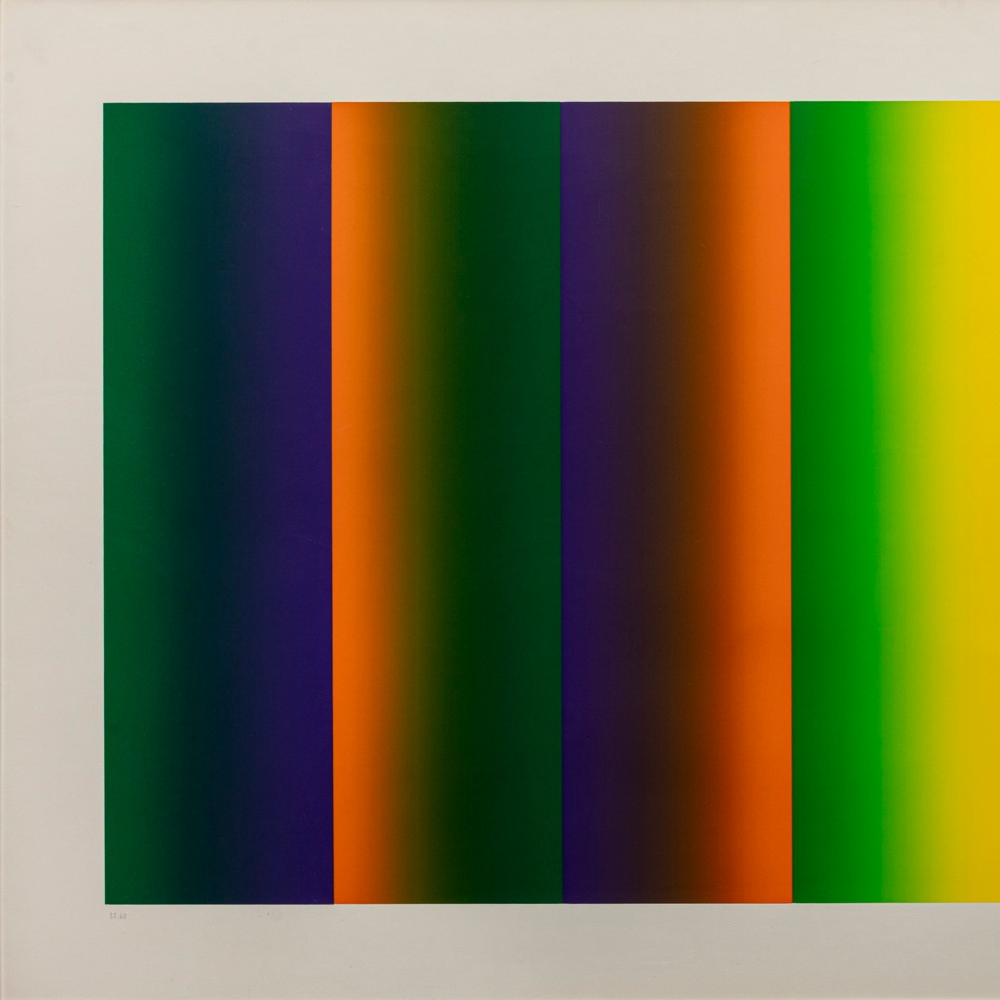

Aldo Schmid nasce a Trento nel 1935, figlio di un apprezzato tipografo di origine viennese, ha frequentato l’istituto magistrale a Trento. Dopo il diploma si dedicò all’insegnamento di educazione fisica, presso l’Istituto tecnico industriale Buonarroti di Trento. Aveva esposto i suoi primi quadri, ispirati al movimento figurativo a Riva del Garda 1957. Negli anni 1958 e il 1959 incontra Virgilio Guidi, inoltre ha la possibilità di una nuova percezione del problema della luce, inteso come fatto totale, energia vitale e ordinatrice dei fenomeni. Tra il 1959 e il 1960 frequentò i corsi di Kokoschka, artista salisburghese, riuscendo così a confrontarsi con artisti internazionali. Nel periodo tra il 1962 e il 1978 si riuscì ad affermare a livello artistico, riuscendo ad esporre in Francia, Svizzera, Spagna ed Austria. Nel biennio 1964-1965 tende ad avere una tensione allo studio e alla sperimentazione, finalizzata alla creazione di una nuova metodologia progettuale della luce vissuta come fatto intimo, quasi psichico, diventa il filo conduttore di un'intensa ricerca, inoltre crea “Sequenze psico-fisiche”, la sua opera più importante, esponendola alla Galleria del Cavallino di Venezia. Durante questo periodo frequenta gli ambienti artistici di Roma e Milano e nel 1969 crea “Sequenze”. Nel 1967 con il pittore giapponese Nobuya Abe fonda il gruppo di ricerca “Illumination”, che riuniva artisti di vari Paesi, impegnati in esperienze di nuova astrazione. Nel 1977 fonda, con l’aiuto e collaborazione di altri artisti, l’associazione “Astrazione Oggettiva”. L’anno dopo a seguito di un incidente ferroviario, muore il 18 aprile 1978 a Bologna, sulla linea Bologna-Firenze.

Aldo Schmid ha utilizzato la tecnica dell'acrilico su tela per creare opere come "3 Tensioni 2 Contrasti" del 1977. L'acrilico, apprezzato per la sua rapidità di asciugatura e versatilità, permette una stesura uniforme del colore e una resa cromatica intensa. Schmid sfruttava queste caratteristiche per esplorare le dinamiche tra tensione e contrasto, elementi centrali nella sua ricerca artistica. La sua metodologia si inserisce nel contesto della Pittura Analitica, movimento degli anni Settanta focalizzato sull'analisi degli elementi fondamentali della pittura, come colore, supporto e processo creativo. In "3 Tensioni 2 Contrasti", Schmid indaga le interazioni cromatiche e formali, utilizzando campiture di colore puro e composizioni geometriche per creare un dialogo visivo che invita l'osservatore a riflettere sulle tensioni e contrasti presenti nell'opera. La precisione tecnica e l'attenzione ai dettagli evidenziano il suo approccio metodico e scientifico allo studio del colore e della forma. Aldo Schmid considera l’arte come esperienza totale della realtà. Si occupa anche del problema del colore come elemento fondamentale della sua poetica, questo nel 1964: non è una ricerca figurativa, ma una ricerca filosofica delle radici stesse della pittura. Per praticare la pittura era necessario adoperare i colori e la questione della rappresentazione poteva riguardare anche una pittura non figurativa. Le opere di Aldo Schmid costituiscono l’applicazione della sua teoria, oltre alla prova di come le tensioni programmate del colore possono restituire un significato simbolico. Secondo alcuni esperti, le ricerche di Schmid sarebbero da definire come logico-artistiche, queste ricerche, non sono altro che una risultanza d’una dialettica della riflessione e dell'invenzione, che hanno come obiettivo un traguardo artistico. La ricerca filosofica di Schmid porta a delle conclusioni: un colore sfumato è in ogni suo punto un colore diverso; il colore è la luce dello spirito umano, separato dal resto della natura. Aldo viene anche definito un “maestro del colore”, per il suo approccio scientifico e artistico dello studio dei colori, attraverso le sue opere egli indaga il rapporto tra percezione fisica e psicologica dei colori, inoltre attraverso il colore rappresenta l’essenzialità dell’esperienza umana e le dinamiche del vivere quotidiano. La sua pratica sociale è basata sulla ricerca e sperimentazione interdisciplinare, con una forte componente ideologica e materiale.